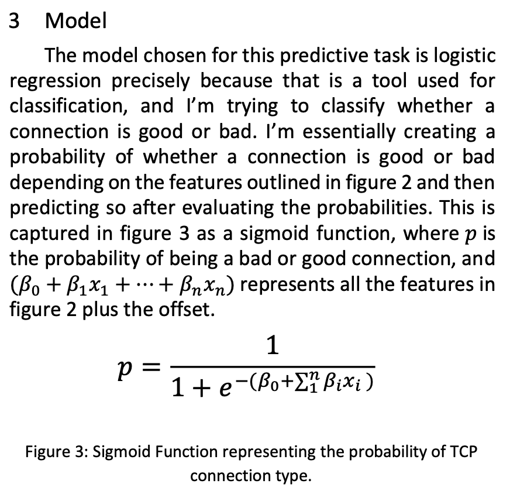
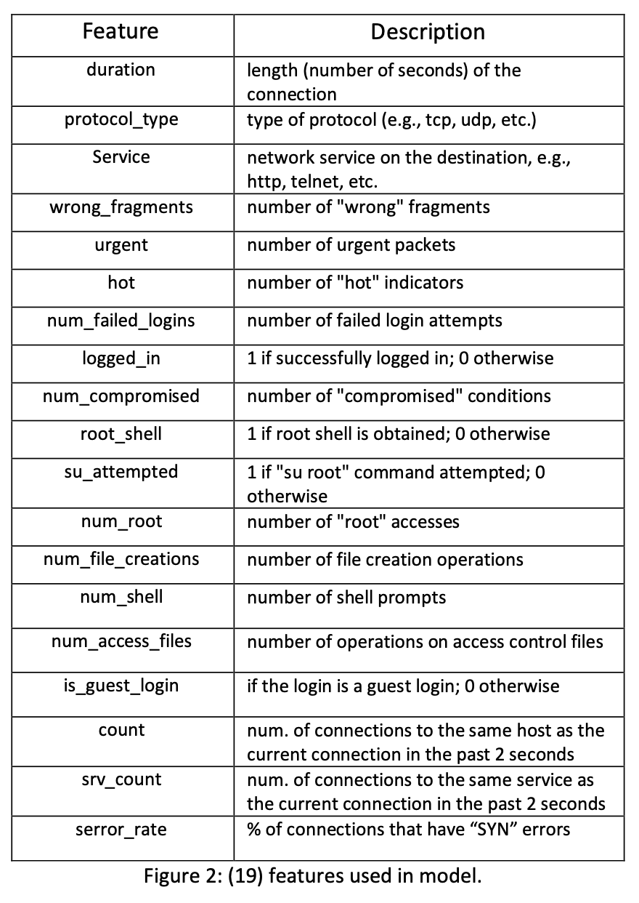
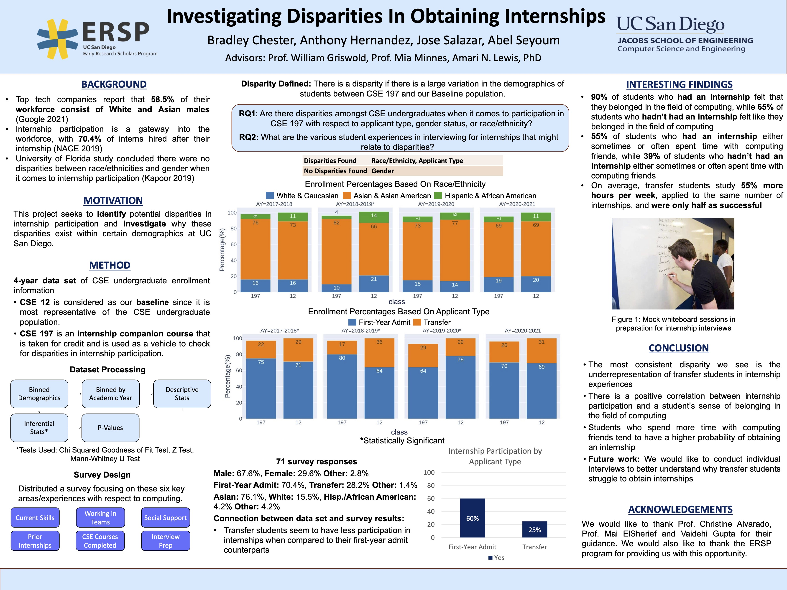

My Projects
- Learning Based Intrusion Detection System
Background of Project: With continuous developments in new technologies, the size of companies networks continues to grow, and so does its attack surface space. This problem is amplified by the growing cyber security threat and their continuously developing penetration techniques. Unfortunately, Network Operation Centers, which help monitor networks, are not scaling at the same rate, and that is why I decided to build a model that could predict whether a connection is a “good” (i.e., normal) or “bad” (i.e., DoS, probing). The model does this by extracting features from a TCP connection and has been built using a data size of approximately 4 million TCP connections.
  - Research Project in Computer Science Education
Background of Research: It has become increasingly apparent that CS students with different backgrounds can have very different experiences. For example, early computing experiences are a strong predictor of success in an undergraduate computer science program, yet African Americans and LatinX students are less likely to have access to such experiences. This project concerns access to special in-program experiences such as internships (e.g., CSE 197) and research (e.g., CSE 199), among others. With the help of the Jacobs School, we have developed a 5-year data set of student enrollments in all kinds of CS courses at UCSD. We will develop hypotheses about disparities in participation in special studies courses, and then test those hypotheses using statistical methods. Based on the results, we will perform additional follow-up investigations, such as interviewing students, industry participants (who provide and interview for internship experiences), and instructors.
